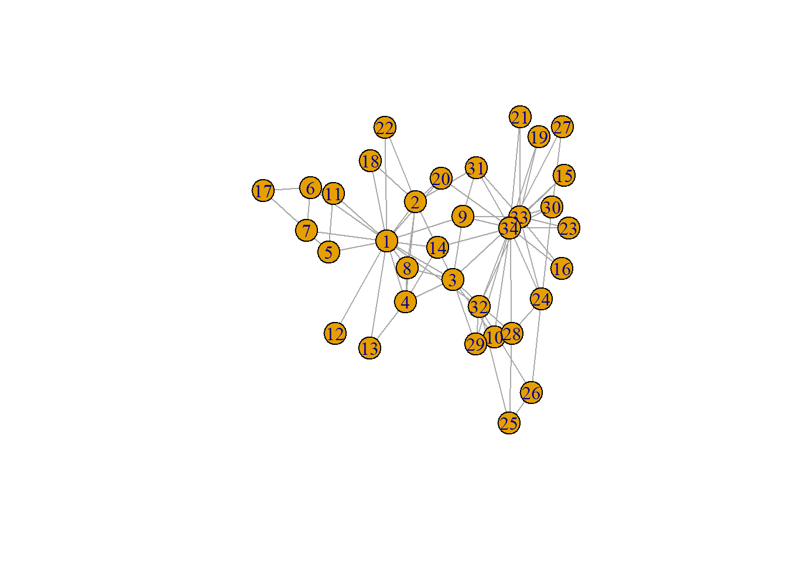
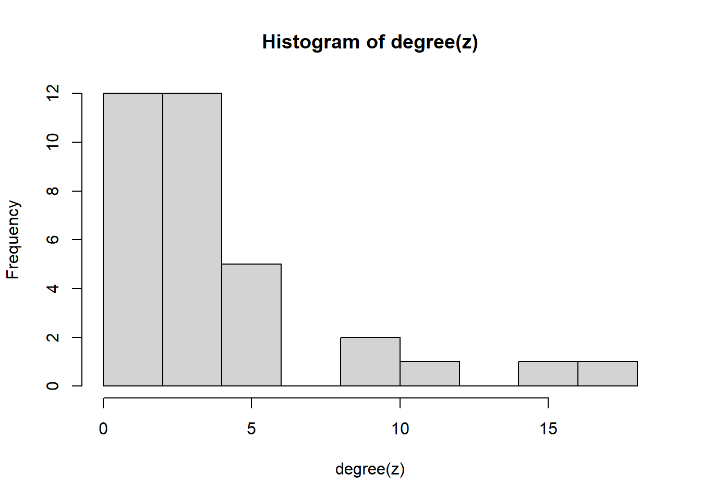
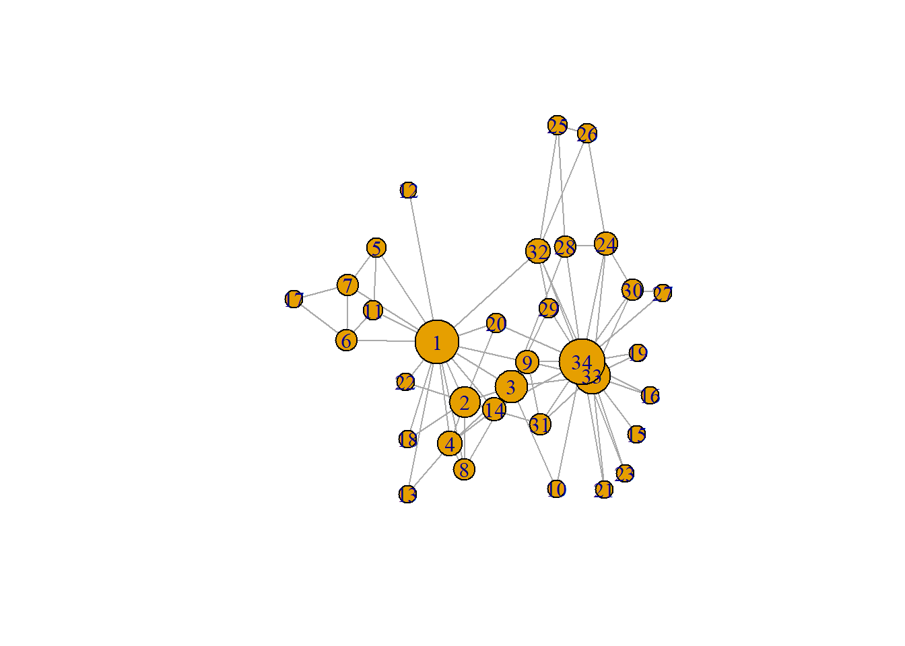

Last compiled on april, 2026
On this page you will find my code from tutorial 2.
library(igraph)
z <- make_graph("Zachary")
z#> IGRAPH 5d6be75 U--- 34 78 -- Zachary
#> + attr: name (g/c)
#> + edges from 5d6be75:
#> [1] 1-- 2 1-- 3 1-- 4 1-- 5 1-- 6 1-- 7 1-- 8 1-- 9 1--11 1--12 1--13 1--14 1--18
#> [14] 1--20 1--22 1--32 2-- 3 2-- 4 2-- 8 2--14 2--18 2--20 2--22 2--31 3-- 4 3-- 8
#> [27] 3--28 3--29 3--33 3--10 3-- 9 3--14 4-- 8 4--13 4--14 5-- 7 5--11 6-- 7 6--11
#> [40] 6--17 7--17 9--31 9--33 9--34 10--34 14--34 15--33 15--34 16--33 16--34 19--33 19--34
#> [53] 20--34 21--33 21--34 23--33 23--34 24--26 24--28 24--33 24--34 24--30 25--26 25--28 25--32
#> [66] 26--32 27--30 27--34 28--34 29--32 29--34 30--33 30--34 31--33 31--34 32--33 32--34 33--34plot(z)
is_directed(z)#> [1] FALSEvcount(z)#> [1] 34ecount(z)#> [1] 78edge_density(z)#> [1] 0.1390374Question: How would you calculate density using ecount() and vcount()?
Answer: density <- ecount / (vcount * (vcount - 1) / 2)
z$density <- edge_density(z)
z#> IGRAPH 5d6be75 U--- 34 78 -- Zachary
#> + attr: name (g/c), density (g/n)
#> + edges from 5d6be75:
#> [1] 1-- 2 1-- 3 1-- 4 1-- 5 1-- 6 1-- 7 1-- 8 1-- 9 1--11 1--12 1--13 1--14 1--18
#> [14] 1--20 1--22 1--32 2-- 3 2-- 4 2-- 8 2--14 2--18 2--20 2--22 2--31 3-- 4 3-- 8
#> [27] 3--28 3--29 3--33 3--10 3-- 9 3--14 4-- 8 4--13 4--14 5-- 7 5--11 6-- 7 6--11
#> [40] 6--17 7--17 9--31 9--33 9--34 10--34 14--34 15--33 15--34 16--33 16--34 19--33 19--34
#> [53] 20--34 21--33 21--34 23--33 23--34 24--26 24--28 24--33 24--34 24--30 25--26 25--28 25--32
#> [66] 26--32 27--30 27--34 28--34 29--32 29--34 30--33 30--34 31--33 31--34 32--33 32--34 33--34count_components(z)#> [1] 1diameter(z)#> [1] 5mean_distance(z)#> [1] 2.4082transitivity(z, type = "average")#> [1] 0.5879306degree(z)#> [1] 16 9 10 6 3 4 4 4 5 2 3 1 2 5 2 2 2 2 2 3 2 2 2 5 3 3 2 4 3 4 4 6
#> [33] 12 17summary(degree(z))#> Min. 1st Qu. Median Mean 3rd Qu. Max.
#> 1.000 2.000 3.000 4.588 5.000 17.000hist(degree(z))
V(z)$degree <- degree(z)
plot(z, vertex.size = V(z)$degree+8, margin= -0.1)
degree(z, v = 3)#> [1] 10betweenness(z)#> [1] 231.0714286 28.4785714 75.8507937 6.2880952 0.3333333 15.8333333 15.8333333 0.0000000
#> [9] 29.5293651 0.4476190 0.3333333 0.0000000 0.0000000 24.2158730 0.0000000 0.0000000
#> [17] 0.0000000 0.0000000 0.0000000 17.1468254 0.0000000 0.0000000 0.0000000 9.3000000
#> [25] 1.1666667 2.0277778 0.0000000 11.7920635 0.9476190 1.5428571 7.6095238 73.0095238
#> [33] 76.6904762 160.5515873z <- z %>%
set_vertex_attr(
name = "betweenness",
value = betweenness(z)
)V(z)$closeness <- closeness(z)